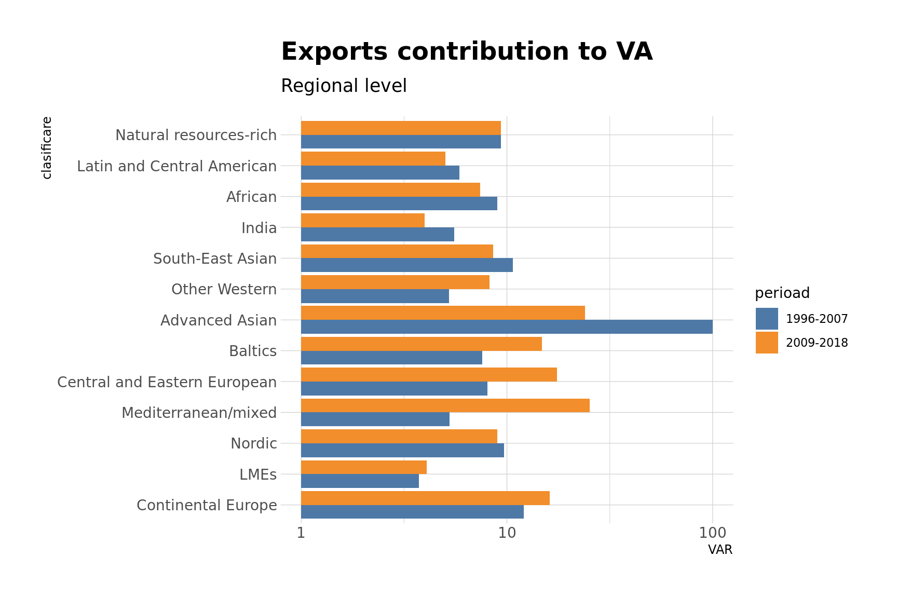

4 Growth Regimes
Let us make a plot similar to yours.
There are some differences between these graphs, but there is an overall agreement as well. Let us now see the growth contribution on the regional level.

Let us see the export sectors with the greatest change between 1995-2007 and 2009-2018 as contribution to value added in six eastern european countries.
| Top 10 export sectors by value added generated | |||
| Sorted by the largest absolute difference between periods1 | |||
| sector | 1995-2007 | 2009-2018 | delta |
|---|---|---|---|
| Slovakia | |||
| Motor vehicles, trailers and semi-trailers | 12.24% | 27.61% | 15.37% |
| Machinery and equipment, nec | 6.75% | 9.33% | 2.57% |
| IT and other information services | 0.86% | 3.02% | 2.16% |
| Professional, scientific and technical activities | 2.80% | 4.66% | 1.86% |
| Wood and products of wood and cork | 1.81% | 0.14% | −1.67% |
| Paper products and printing | 1.99% | 0.32% | −1.68% |
| Telecommunications | 1.62% | −0.17% | −1.79% |
| Coke and refined petroleum products | 1.48% | −0.44% | −1.92% |
| Construction | 9.91% | 5.62% | −4.29% |
| Computer, electronic and optical equipment | 4.99% | 0.14% | −4.85% |
| Czechia | |||
| Motor vehicles, trailers and semi-trailers | 15.48% | 26.42% | 10.93% |
| Administrative and support services | 1.17% | 2.67% | 1.50% |
| Land transport and transport via pipelines | 2.07% | 3.50% | 1.43% |
| IT and other information services | 1.09% | 2.47% | 1.38% |
| Telecommunications | 1.25% | 0.02% | −1.23% |
| Food products, beverages and tobacco | 4.18% | 2.83% | −1.35% |
| Computer, electronic and optical equipment | 4.36% | 2.68% | −1.67% |
| Basic metals | 3.71% | 2.01% | −1.70% |
| Electricity, gas, steam and air conditioning supply | 2.51% | −0.28% | −2.79% |
| Construction | 10.20% | 6.32% | −3.88% |
| Romania | |||
| Motor vehicles, trailers and semi-trailers | 7.01% | 16.86% | 9.85% |
| Food products, beverages and tobacco | 4.83% | 8.65% | 3.82% |
| Professional, scientific and technical activities | 3.32% | 6.24% | 2.92% |
| IT and other information services | 1.53% | 4.10% | 2.57% |
| Machinery and equipment, nec | 4.07% | 5.36% | 1.29% |
| Financial and insurance activities | 2.77% | 1.55% | −1.22% |
| Computer, electronic and optical equipment | 3.19% | 1.88% | −1.32% |
| Textiles, textile products, leather and footwear | 3.21% | 1.21% | −2.01% |
| Basic metals | 3.41% | 1.26% | −2.15% |
| Construction | 8.52% | 6.17% | −2.35% |
| Hungary | |||
| Motor vehicles, trailers and semi-trailers | 12.05% | 19.35% | 7.30% |
| IT and other information services | 1.50% | 4.27% | 2.76% |
| Administrative and support services | 1.64% | 3.28% | 1.64% |
| Rubber and plastics products | 2.19% | 3.42% | 1.23% |
| Machinery and equipment, nec | 5.94% | 4.82% | −1.12% |
| Public administration and defence; compulsory social security | 1.92% | 0.70% | −1.22% |
| Food products, beverages and tobacco | 6.18% | 4.22% | −1.96% |
| Construction | 8.33% | 6.23% | −2.10% |
| Telecommunications | 1.89% | −0.72% | −2.61% |
| Computer, electronic and optical equipment | 5.93% | −0.75% | −6.68% |
| Bulgaria | |||
| Food products, beverages and tobacco | 8.44% | 12.86% | 4.43% |
| Motor vehicles, trailers and semi-trailers | 3.43% | 6.93% | 3.49% |
| Electrical equipment | 2.41% | 4.78% | 2.37% |
| Fabricated metal products | 4.62% | 3.26% | −1.37% |
| Warehousing and support activities for transportation | 2.09% | 0.62% | −1.48% |
| Financial and insurance activities | 2.47% | 0.67% | −1.80% |
| Water transport | 1.80% | −0.01% | −1.80% |
| Telecommunications | 2.03% | 0.03% | −1.99% |
| Construction | 10.47% | 8.20% | −2.27% |
| Wholesale and retail trade; repair of motor vehicles | 7.26% | 3.83% | −3.43% |
| Poland | |||
| IT and other information services | 1.08% | 3.04% | 1.96% |
| Motor vehicles, trailers and semi-trailers | 9.84% | 11.29% | 1.45% |
| Human health and social work activities | 2.35% | 3.71% | 1.37% |
| Accommodation and food service activities | 1.67% | 2.90% | 1.22% |
| Administrative and support services | 1.70% | 2.76% | 1.06% |
| Electricity, gas, steam and air conditioning supply | 1.80% | 1.00% | −0.80% |
| Wholesale and retail trade; repair of motor vehicles | 8.04% | 7.14% | −0.90% |
| Basic metals | 4.43% | 3.18% | −1.25% |
| Construction | 9.40% | 7.82% | −1.58% |
| Computer, electronic and optical equipment | 3.22% | 0.99% | −2.23% |
| 1 Relative contribution to total VA generated by exports | |||